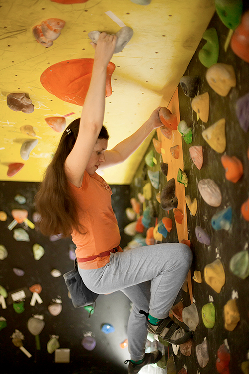

Скалолазание – это новая альтернатива фитнесу, который не имеет противопоказаний и подходит всем вне зависимости от возраста и физической подготовки. Этот увлекательный спорт требует полной концентрации на текущей задаче, освобождая мозг от всего, что отвлекало вас в течение дня. Вы испытываете бурю эмоций, когда разгадываете, какое движение нужно сделать на трассе, и оно вам удается. Нужно заранее понимать, какую зацепку вы возьмете следующей или как перенесете вес на ногах. А чувству восторга от взятия зацепки не найти аналогий. Возьмите на тренировку друзей, компания будет вас мотивировать, и в целом удовольствия вы получите больше.
Скальники — это обувь, которая создана специально для занятий скалолазанием. Их можно взять в аренду у наших администраторов.
Магнезия – белый порошок, который наносится на руки и поглощает пот. С его помощью можно в разы улучшить сцепление между зацепами и ладонями. Её вы также можете приобрести у администратора.
Одежда. Штаны – шорты и майка – футболка. Лучше всего подбирать ее таким образом, чтобы она не сковывала ваши движения.
Любой спорт, в первую очередь должен нравиться и воодушевлять. А что может быть приятнее для современного человека, чем отвлечься от будничной суеты и хорошенько нагрузить затекшие от офисного бдения мышцы? Скалолазание – это превосходная возможность заменить унылые занятия в тренажерных залах на скалодром, который поможет восстановить энергию и отвлечься от тяжелых рабочих будней. Это спорт, который оптимальным способом развивает все главные группы мышц. Помимо этого, если вы регулярно занимаетесь скалолазание, то уже через 10 – 12 занятий у вас:
Девушкам будет интересно узнать про пользу скалолазания для одной из самых проблемных зон – внутренней поверхности бедра, а также ягодиц, мышц пресса и спины. Мышцы укрепляются и подтягиваются быстро, а главное – как-то незаметно, в напряженной, но азартной форме. Развивается гибкость – ведь при восхождении придется не только руки, но и ноги закидывать туда, куда их можно поставить, а не где удобнее.
